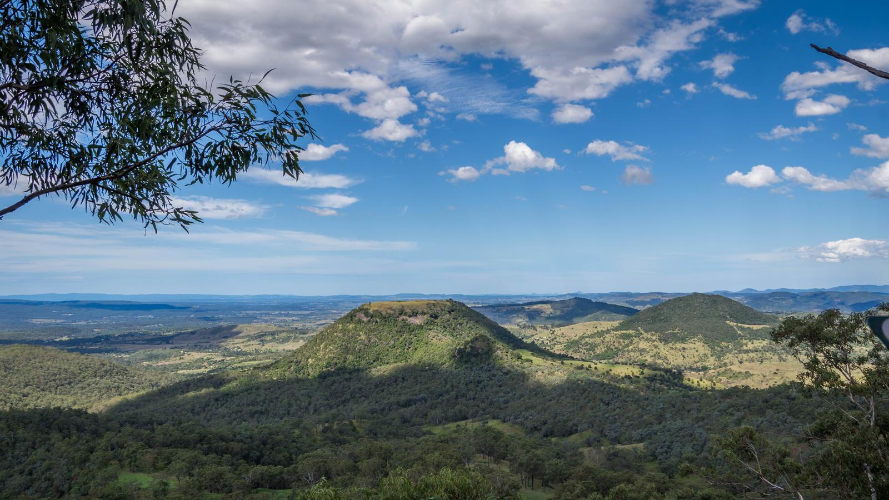
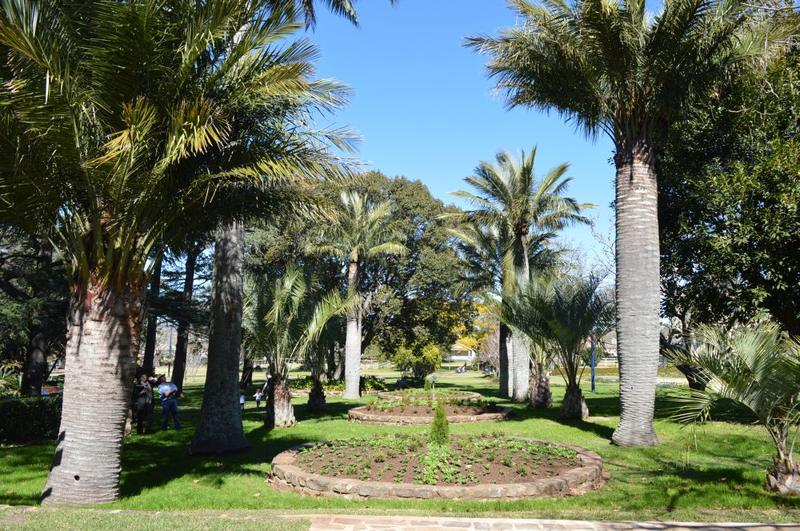
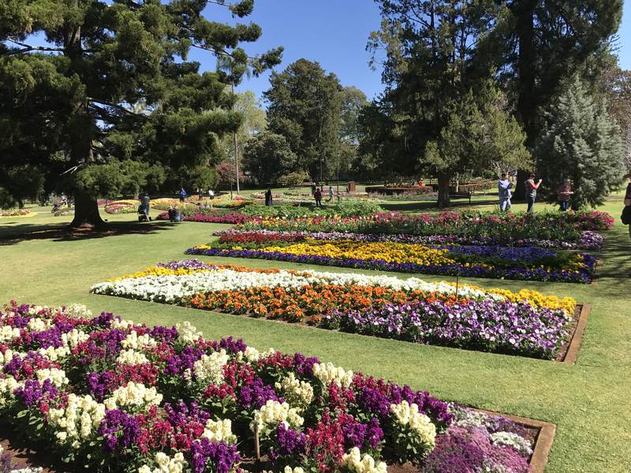
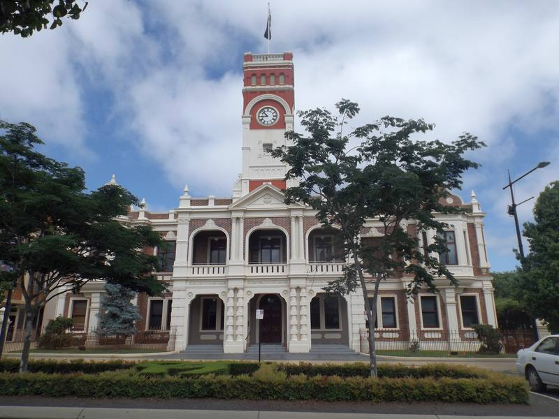

Toowoomba, Queensland
What's on in Toowoomba
Events, garage sales, and community notices from public listings. Nothing here is made up.
Things to do around Toowoomba
See allWalks, parks, lookouts and drives that are here all year. Each card links to the council, parkrun or Queensland Parks page.
This weekend

Laurel Bank Park
Garage sales
Date, suburb, and items from public listings.
138 upcoming listings in Toowoomba
- Term 4 2026: indelarts Toowoomba Film Class - Empire Theatre Tue, 6 Oct 2026, 1:00 am – Tue, 8 Dec, 2:30 pm · The Empire · Toowoomba City
- Bush Christmas Exhibition (30th year) Wed, 18 Nov 2026, 9:00 am – Fri, 27 Nov, 6:00 pm · 58 Neil St · Toowoomba
- Bx Networking Toowoomba - Business Networking in Brisbane Wed, 25 Nov 2026, 8:00 am – 10:00 am · The Southern Hotel Toowoomba · Kearneys Spring
- 2026 QLD Roadshow - Toowoomba Wed, 25 Nov 2026, 9:00 am – 12:00 pm · Oaks Toowoomba Hotel · Toowoomba City
- Coffee and Connect - The Weekly Pause Wed, 25 Nov 2026, 9:30 am – 10:30 am · 15-17 Kitchener St · East Toowoomba
- 2026 SCOTS PGC College Foundation Toowoomba Luncheon Wed, 25 Nov 2026, 11:30 am – 3:00 pm · Picnic Point Toowoomba · Toowoomba City
- DROP IN | Game Zone @ Toowoomba City Library Wed, 25 Nov 2026, 3:30 pm – 5:00 pm · Toowoomba City Library · Toowoomba City
- The Society for Tactical Regrets and Perilous Renewal Wed, 25 Nov 2026, 3:30 pm – 5:30 pm · 158 Margaret St · Toowoomba City
- De-stress & Rejuvenate with Heartfulness meditation @Toowoomba city library Wed, 25 Nov 2026, 5:45 pm – 6:45 pm · Toowoomba City Library · Toowoomba City
- INTRO TO GROOV3: Toowoomba Wed, 25 Nov 2026, 6:30 pm – 7:30 pm · Belong Church · South Toowoomba
- 🧵 The Creative Studios: Sew & Sing | Toowoomba Thu, 26 Nov 2026, 12:00 pm – 4:00 pm · 376 Ruthven St · Toowoomba City
- Make & Mend Afternoon Thu, 26 Nov 2026, 1:00 pm – 4:00 pm · USQ Library · Darling Heights
- Forever Neil Diamond - THE GREATEST HITS OF NEIL DIAMOND Fri, 27 Nov 2026 · The Empire · Toowoomba
- 1-Day Public Speaking and Presentation Skills Training in Geelong Fri, 27 Nov 2026, 8:00 am – 4:00 pm · The venue is yet to be announced · Toowoomba
- Free Community English Class – Toowoomba Fri, 27 Nov 2026, 9:00 am – 10:30 am · Newtown State School · Toowoomba
- Free Community English Class – Toowoomba Fri, 27 Nov 2026, 1:30 pm – 2:30 pm · Harlaxton State School · Toowoomba
- Mickey Wilson - How Ya Goin? | Toowoomba Stand Up Comedy Show Fri, 27 Nov 2026, 7:30 pm – 8:30 pm · The Irish · Toowoomba City
- Highfields parkrun Sat, 28 Nov 2026, 7:00 am · Highfields Sports and Recreation Park · Highfields
- Toowoomba parkrun Sat, 28 Nov 2026, 7:00 am · Queens Park · East Toowoomba
- ALL MUST GO! Sat, 28 Nov 2026, 10:00 am – 2:00 pm · Private house · South Toowoomba
- Cruise For Kids 2026 Family-friendly Motor Vehicle Show & Shine and Community Cruise Registration Sat, 28 Nov 2026, 10:00 am – 4:00 pm · Toowoomba Showgrounds · Glenvale
- Cruise For Kids 2026 Family-Friendly Motor Vehicle Show & Shine/Fun Day Sat, 28 Nov 2026, 10:00 am – 4:00 pm · Toowoomba Showgrounds · Glenvale
- Conscious Dancing and Celebration Sat, 28 Nov 2026, 12:00 pm – 1:00 pm · Toowoomba
- Rnb 90s - 2000s Before Dark Sat, 28 Nov 2026, 4:00 pm – 9:00 pm · Cube Hotel · Toowoomba
- Poets in the Bookstore Sat, 28 Nov 2026, 6:00 pm – 8:00 pm · Jeremy's Book Exchange · Top Camp
- Live & Local @ The Powerhouse - Saturday 28 November 2026 Sat, 28 Nov 2026, 6:30 pm – 10:30 pm · The Powerhouse Toowoomba · Toowoomba City
- DownsSteam Christmas Lights Train Trip Sat, 28 Nov 2026, 7:00 pm – 9:00 pm · Toowoomba railway station · Toowoomba City
- 🧵 The Creative Studios: Sew & Sing | Toowoomba Sun, 29 Nov 2026, 10:00 am – 2:00 pm · 376 Ruthven St · Toowoomba City
- Toowoomba Online Speed Dating Made Easy for Newcomers Sun, 29 Nov 2026, 7:00 pm – 8:00 pm · 18 Bowen Street · Toowoomba City
- Toowoomba Singles Speed Social Sun, 29 Nov 2026, 7:00 pm – 8:00 pm · GW78+FP Birnam · Toowoomba
- Preparing the Hub for the Holiday Season Mon, 30 Nov 2026, 10:00 am – 11:00 am · Wellways Toowoomba · East Toowoomba
- Book club, Board Games & Connect Mon, 30 Nov 2026, 2:00 pm – 3:00 pm · Wellways Toowoomba · East Toowoomba
- Christmas Cookie Mix in a Jar Create • Connect • Celebrate Tue, 1 Dec 2026, 10:00 am – 12:00 pm · Wellways Toowoomba · East Toowoomba
- Coffee Catch Up with Flourish QMS | Toowoomba Tue, 1 Dec 2026, 10:00 am – 11:30 am · Dream Cafe & Bar · Toowoomba City
- Tabletop Tuesday: NDIS Supported Community Activity Tue, 1 Dec 2026, 10:00 am – 2:00 pm · The Milk House Collective · North Toowoomba
- Talk, Read, Sing, Play in the Community — 1a Birch Court Park, Darling Heights Tue, 1 Dec 2026, 10:00 am – 11:00 am · 1a Birch Court Park, Darling Heights · Darling Heights
- Toowoomba, QLD - Starts at 60 Meetup Tue, 1 Dec 2026, 10:00 am – 12:00 pm · Federal Hotel · Toowoomba City
- Queensland Police Service Recruiting Seminar - Toowoomba Tue, 1 Dec 2026, 5:30 pm – 7:00 pm · 52 Neil St · Toowoomba City
- Line Dancing: Fortnightly Boot Scootin' Tue, 1 Dec 2026, 6:00 pm – 7:30 pm · Aberfeldy Barn · Toowoomba
- Read + Play — Millmerran Library Wed, 2 Dec 2026, 10:00 am – 10:30 am · Millmerran Library · Millmerran
- Conversations with the Chair Toowoomba Wed, 2 Dec 2026, 10:30 am – 1:00 pm · Highfields Library · Highfields
- Connect with PeakCare | Toowoomba Wed, 2 Dec 2026, 3:00 pm – 5:00 pm · The Rock Toowoomba · Toowoomba City
- Into the Woods Thu, 3 Dec 2026 · The Empire · Toowoomba
- BxNetworking Highfields - Business Networking Reimagined in Queensland Thu, 3 Dec 2026, 8:00 am – 10:00 am · Savour This Eatery · Highfields
- Getting Found on Google & AI Search | Toowoomba | Beginner Thu, 3 Dec 2026, 9:00 am – 10:30 am · Toowoomba City Library · Toowoomba City
- Stronger Together: NDIS Roundtable – Toowoomba Thu, 3 Dec 2026, 9:30 am – 1:00 pm · Toowoomba City Library · Toowoomba City
- Celebrate DAW, IDPwD and Christmas 2026 Thu, 3 Dec 2026, 10:00 am – 12:00 pm · Multicultural Australia · Toowoomba City
- Read + Play — Clifton Library Thu, 3 Dec 2026, 10:00 am – 10:30 am · Clifton Library · Clifton
- Automating more of your small business tasks | Toowoomba | Beginner Thu, 3 Dec 2026, 11:00 am – 12:30 pm · Toowoomba City Library · Toowoomba City
- International Day of People with Disability - Join us for Morning Tea Thu, 3 Dec 2026, 11:00 am – 1:00 pm · Wellways Carer Gateway · Toowoomba
- 🧵 The Creative Studios: Sew & Sing | Toowoomba Thu, 3 Dec 2026, 12:00 pm – 4:00 pm · 376 Ruthven St · Toowoomba City
- Building a Website with AI | Toowoomba | Intermediate Thu, 3 Dec 2026, 1:00 pm – 2:30 pm · Toowoomba City Library · Toowoomba City
- Let's meetup to share and learn more about WordPress Thu, 3 Dec 2026, 6:00 pm – 8:00 pm · 2 Derwak St · Harristown
- DROP IN | Bikkies and Boardgames Fri, 4 Dec 2026, 10:00 am – 12:00 pm · Toowoomba City Library · Toowoomba City
- Read + Play — Cecil Plains Library Fri, 4 Dec 2026, 10:00 am – 10:30 am · Cecil Plains Library · Cecil Plains
- Talk, Read, Sing, Play in the Community — Harlaxton Hub Fri, 4 Dec 2026, 10:00 am – 11:00 am · Harlaxton Hub · Harlaxton
- Downs & Western Festive Season Celebration Fri, 4 Dec 2026, 2:00 pm – 4:00 pm · Master Builders Queensland (Toowoomba) · Toowoomba City
- Sparks Fly Singles Only Bowling - Toowoomba Fri, 4 Dec 2026, 6:30 pm – 9:00 pm · Sunset Superbowl · Glenvale
- Toowoomba Disciple Making Accelerator Fri, 4 Dec 2026, 6:30 pm – Sat, 5 Dec, 4:00 pm · Victory Life Church North Toowoomba · North Toowoomba
- Theatre of Magic Sat, 5 Dec 2026 · The Empire · Toowoomba
- ACTV GAMES 2.0 TOOWOOMBA Sat, 5 Dec 2026, 6:15 am – 8:00 am · ACTV STRENGTH CO TOOWOOMBA · Toowoomba City
- Fun Factory: Origami Card Making Sat, 5 Dec 2026, 10:30 am – 12:00 pm · Toowoomba City Library · Toowoomba City
- Cambooya Christmas Party Sat, 5 Dec 2026, 4:00 pm – 8:00 pm · Cambooya Recreation Grounds · Cambooya
- toowoomba queer social ★ 18+ prom night Sat, 5 Dec 2026, 5:00 pm – 11:00 pm · Greek Hall @ 240 Hume Street · South Toowoomba
- Fa La La La Flaws: An Ugly Christmas Shirt Mingle Sat, 5 Dec 2026, 6:30 pm – 10:00 pm · The Rock · Toowoomba City
- Liam Higgins - Love Is A Language Tour - Toowoomba Sat, 5 Dec 2026, 7:00 pm – 11:00 pm · Volcanic Brewing · Toowoomba City
- Toowoomba's Christmas Wonderland Sat, 5 Dec 2026, 7:00 pm – 10:00 pm · Botanic Gardens, Queens Park · East Toowoomba
- 🧵 The Creative Studios: Sew & Sing | Toowoomba Sun, 6 Dec 2026, 10:00 am – 2:00 pm · 376 Ruthven St · Toowoomba City
- End of Year Celebration 6 December 2026 - Buzzing with Bees Sun, 6 Dec 2026, 2:00 pm – 5:30 pm · The Hub, Civic Church · Kearneys Spring
- Meet the Author & Writer's Workshop: Lee Boehm Mon, 7 Dec 2026, 10:00 am – 11:00 am · Toowoomba City Library · Toowoomba City
- UniSQ Library Book Club Tue, 8 Dec 2026, 1:00 pm – 2:00 pm · USQ Library · Darling Heights
- The Australian Army Band Thu, 10 Dec 2026 · The Empire · Toowoomba
- Taste of Home - Bring a Plate, Recipe Swap & Carer Gathering Thu, 10 Dec 2026, 10:30 am – 12:30 pm · 15-17 Kitchener St · East Toowoomba
- 🧵 The Creative Studios: Sew & Sing | Toowoomba Thu, 10 Dec 2026, 12:00 pm – 4:00 pm · 376 Ruthven St · Toowoomba City
- The Write Time: Writers group Thu, 10 Dec 2026, 3:30 pm – 5:00 pm · New Leaf Social Work · Toowoomba City
- First Aid for Educators - IN SERVICE ONLY - Oakey Kids Patrol Thu, 10 Dec 2026, 5:30 pm – 8:30 pm · Kids Patrol Oakey Academy · Oakey
- Patrick James - Live In Concert - GROOM PARK HALL, TOOWOOMBA Thu, 10 Dec 2026, 7:00 pm – 8:30 pm · Groom Park Hall · South Toowoomba
- Matcha & Ceramic Painting Workshop - Toowoomba Fri, 11 Dec 2026, 6:00 pm – 8:00 pm · Middle Ridge Uniting Church · Centenary Heights
- INTIMO Fri, 11 Dec 2026, 8:00 pm – Sun, 13 Dec, 3:00 am · The Cube Hotel · Toowoomba City
- Craft Market Jamboree Sat, 12 Dec 2026, 6:30 am – 12:00 pm · The Milk House Collective · North Toowoomba
- Turkish Coffee & Ceramic Painting Workshop - Toowoomba Sat, 12 Dec 2026, 9:00 am – 11:00 am · Middle Ridge Uniting Church · Centenary Heights
- Love Your Cycle Sat, 12 Dec 2026, 2:00 pm – 3:30 pm · Healing Elizabeth · Toowoomba
- DownsSteam Christmas Lights Train Trip Sat, 12 Dec 2026, 7:00 pm – 9:00 pm · Toowoomba railway station · Toowoomba City
- Christmas of Remembrance Service - Toowoomba Sun, 13 Dec 2026, 2:00 pm – 4:00 pm · Toowoomba Garden of Remembrance · Kearneys Spring
- Sunday Soirée – A Cracking Christmas Sun, 13 Dec 2026, 3:30 pm · Rink 46, Drayton Bowls Club · Drayton
- Mantra Rhythm - Toowoomba Sun, 13 Dec 2026, 4:00 pm – 5:30 pm · Clive Berghofer Recreation Centre · Darling Heights
- Toowoomba Men Dating Men: Online Speed Dating Sun, 13 Dec 2026, 7:00 pm – 8:00 pm · 239 Carroll Rd · Toowoomba
- How to Achieve the Life You Want: A 2-Day Money Workshop for Youth Mon, 14 Dec 2026, 9:00 am – Tue, 15 Dec, 3:00 pm · WOTSO Toowoomba · Toowoomba City
- Gallery Gremlins: School Holiday Sessions Mon, 14 Dec 2026, 10:00 am – 12:00 pm · The Milk House Collective · North Toowoomba
- Life After Caring Group (Toowoomba) Mon, 14 Dec 2026, 12:30 pm – 2:00 pm · Wellways Toowoomba · East Toowoomba
- Read + Play — Yarraman Library Tue, 15 Dec 2026, 10:15 am – 10:45 am · Yarraman Library · Yarraman
- Build a Bot 2 Day Workshop Thu, 17 Dec 2026, 9:00 am – Fri, 18 Dec, 3:00 pm · USQ Library · Darling Heights
- • QLD 2 Carers; The Mindful Stitching Project (Toowoomba) Thu, 17 Dec 2026, 9:30 am – 11:30 am · Wellways Toowoomba · East Toowoomba
- Read + Play — Clifton Library Thu, 17 Dec 2026, 10:00 am – 10:30 am · Clifton Library · Clifton
- 🧵 The Creative Studios: Sew & Sing | Toowoomba Thu, 17 Dec 2026, 12:00 pm – 4:00 pm · 376 Ruthven St · Toowoomba City
- Meet, Make, and Do @ Toowoomba City Library Fri, 18 Dec 2026, 10:00 am – 12:00 pm · Toowoomba City Library · Toowoomba City
- Christmas Trivia & Games Social Catchup Fri, 18 Dec 2026, 2:00 pm – 3:00 pm · Wellways Toowoomba · East Toowoomba
- Pool Party- Holidays Edition! Fri, 18 Dec 2026, 4:00 pm – 6:00 pm · Milne Bay Aquatic & Fitness Centre · Toowoomba City
- Summer Fest Sat, 19 Dec 2026 · Toowoomba Malayali Association · Middle Ridge
- Jondaryan Christmas Markets Sat, 19 Dec 2026, 9:00 am · Jondaryan Community Hall · Jondaryan
- Community Christmas Carols Sun, 20 Dec 2026, 4:00 pm · Highfields Cultural Centre · Highfields
- Holiday Sing Along & Social Gathering Thu, 24 Dec 2026, 2:00 pm – 3:00 pm · Wellways Toowoomba · East Toowoomba
- WorshipHIM NYE 2026 (Toowoomba) Wed, 30 Dec 2026, 6:00 pm – Fri, 1 Jan, 10:00 am · Toowoomba Showgrounds Caravan Park · Glenvale
- Sparks Fly Singles Only NYE 80's Party - Toowoomba Thu, 31 Dec 2026, 6:00 pm – 8:30 pm · Flipp'd · Toowoomba City
- NYE Charity Casino Night Thu, 31 Dec 2026, 7:00 pm – 11:30 pm · Rink 46 home of Drayton Bowls Club · Drayton
- Toowoomba, QLD - Starts at 60 Meetup Tue, 5 Jan 2027, 10:00 am – 12:00 pm · Federal Hotel · Toowoomba City
- New Year Recipe Swap Thu, 7 Jan 2027, 10:00 am – 11:00 am · Wellways Toowoomba · East Toowoomba
- Read + Play — Clifton Library Thu, 14 Jan 2027, 10:00 am – 10:30 am · Clifton Library · Clifton
- 🧵 The Creative Studios: Sew & Sing | Toowoomba Thu, 14 Jan 2027, 12:00 pm – 4:00 pm · 376 Ruthven St · Toowoomba City
- 🧵 The Creative Studios: Sew & Sing | Toowoomba Sun, 17 Jan 2027, 10:00 am – 2:00 pm · 376 Ruthven St · Toowoomba City
- Connect and Learn - Tool Sharpening for Garden & Home Mon, 18 Jan 2027, 6:30 pm – 8:30 pm · Level 3 Meeting Rooms, Toowoomba City Library · Toowoomba City
- Read + Play — Yarraman Library Tue, 19 Jan 2027, 10:15 am – 10:45 am · Yarraman Library · Yarraman
- McGregor School 2027 Fri, 22 Jan 2027 · UniSQ Toowoomba · Toowoomba
- Australian citizenship ceremony — Date Mon, 25 Jan 2027 · Date
- Australian citizenship ceremony Mon, 25 Jan 2027, 10:00 am · The Annex, 541 Ruthven Street, Toowoomba · Toowoomba
- Australian citizenship ceremony Mon, 25 Jan 2027, 2:00 pm · The Annex, 541 Ruthven Street, Toowoomba · Toowoomba
- Stand together for MND Sat, 30 Jan 2027, 3:00 pm – 10:00 pm · Pittsworth Showgrounds · Pittsworth
- Toowoomba, QLD - Starts at 60 Meetup Tue, 2 Feb 2027, 10:00 am – 12:00 pm · Federal Hotel · Toowoomba City
- Navigating Grants and Incentives: Unlocking Manufacturing Growth, Toowoomba Wed, 3 Feb 2027, 11:30 am – 2:30 pm · Toowoomba City Library · Toowoomba City
- Your Local Wedding Guide Toowoomba Expo - 7th February 2027 Sun, 7 Feb 2027, 10:00 am – 2:00 pm · The Goods Shed Toowoomba · Toowoomba City
- Toowoomba Speed Dating Sat, 13 Feb 2027, 10:30 am – 12:30 pm · St Lukes Hall, 152 Herries St Toowoomba City (Opposite Cash Converters) · Toowoomba City
- Toowoomba - COMMONS WORSHIP NIGHTS Sat, 20 Feb 2027, 5:30 pm – 9:30 pm · Highlands Church · Kearneys Spring
- Champagne After Dark - Champagne Dinner - Bergen, Toowoomba Fri, 26 Feb 2027, 6:00 pm – 9:00 pm · Bergen Restaurant Toowoomba · Toowoomba City
- ACORN Qld Regional Education Day - Toowoomba Sat, 27 Feb 2027, 8:00 am – 3:30 pm · St Vincents Hospital Clinical School, Level 2, 22 Scott Street, Toowoomba · East Toowoomba
- The Athlete & The Alchemist Breathwork Journey | Toowoomba Sun, 28 Feb 2027, 4:00 pm – 6:00 pm · Newtown Hall · Newtown
- Toowoomba, QLD - Starts at 60 Meetup Tue, 2 Mar 2027, 10:00 am – 12:00 pm · Federal Hotel · Toowoomba City
- GIQ Greenlife Industry Tour: Boomaroo & Toowoomba Fri, 5 Mar 2027, 9:00 am – 3:30 pm · Boomaroo Nurseries Southbrook · Southbrook
- Connect and Learn - Preserving Produce: Zucchinis 10 Ways Mon, 15 Mar 2027, 6:30 pm – 8:30 pm · Level 3 Meeting Rooms, Toowoomba City Library · Toowoomba City
- Introduction to Integrated Management System Workshop - Toowoomba Thu, 18 Mar 2027, 8:30 am – 4:30 pm · Toowoomba Sports Ground · East Toowoomba
- NamiiCon 2027 Sun, 21 Mar 2027, 10:00 am – 4:00 pm · Wilsonton State High School · Wilsonton Heights
- Toowoomba, QLD - Starts at 60 Meetup Tue, 6 Apr 2027, 10:00 am – 12:00 pm · Federal Hotel · Toowoomba City
- Neil Diamond musical 'A Beautiful Noise' day trip Thu, 15 Apr 2027, 10:00 am – 6:00 pm · Discovery Coaches · Toowoomba City
- DREAMS PRESENTS: FLEETWOOD MAC RUMOURS 50TH ANNIVERSARY TOUR | MILLMERRAN Sat, 17 Apr 2027, 7:00 pm – 10:00 pm · The Mill Inn · Millmerran
- Open Heavens - Rich in Life! Sat, 1 May 2027, 4:00 pm – 8:30 pm · 311 Cooby Dam Rd · Meringandan
- Toowoomba, QLD - Starts at 60 Meetup Tue, 4 May 2027, 10:00 am – 12:00 pm · Federal Hotel · Toowoomba City
- Jesus Christ Superstar Thu, 24 June 2027 · The Empire · Toowoomba
- Toowoomba West Special School Cent Sale Sun, 25 July 2027, 11:30 am · Toowoomba City
- 2027 Toowoomba Open Day Sat, 14 Aug 2027 · UniSQ Toowoomba · Toowoomba
In the city
Queens Park in flower, and City Hall on the edge of the centre.


Find what's on
Looking for what's on in Toowoomba? Start with events this weekend, garage sales, or things to do, including Toowoomba parkrun.